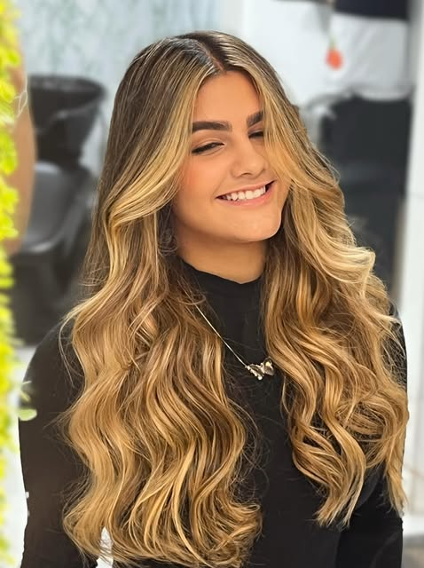
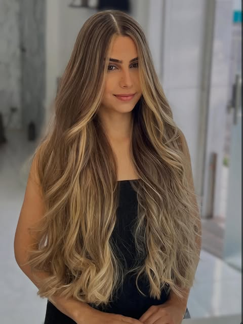
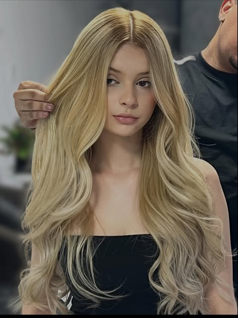
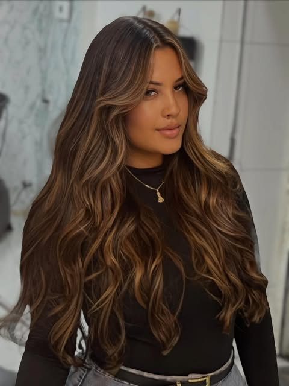
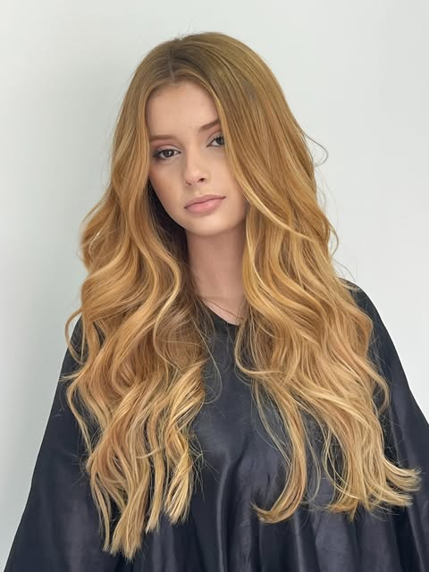
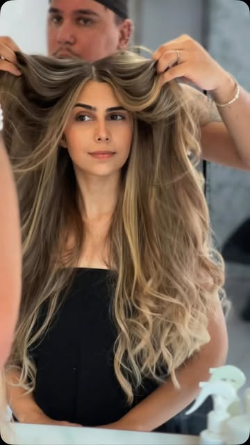

I
Loiros
Do perolado ao mel. Mechas, morena-to-blond e platinados com fio protegido do início ao fim.
Coloração autoral em Caruaru
Loiros luminosos, morenas iluminadas e ruivos que parecem ter nascido com você. Transformações com naturalidade e sofisticação, assinadas por Leonnardo Lyra.


Do preto de tintaao iluminado
01 · Especialidades
Cada cor começa num diagnóstico do seu fio, do seu tom de pele e da sua rotina. O resultado é bonito no salão e continua bonito semanas depois.

Do perolado ao mel. Mechas, morena-to-blond e platinados com fio protegido do início ao fim.

Luz onde o sol bateria. Caramelo, chocolate e bege, com raiz natural e manutenção espaçada.

Acobreados, cerejas e ruivos dourados com brilho intenso e cor que não desbota na segunda lavagem.
02 · Descubra seu tom
Responda duas perguntas e veja o caminho mais indicado. Você já chega no WhatsApp com a conversa começada.
Escolha uma opção em cada pergunta.

04 · O colorista
“Ela nasceu para esse cabelo.”
À frente da Maison Lyra, Leonnardo se especializou no que mais exige técnica dentro do salão: clarear com segurança, corrigir cores difíceis e construir tons que valorizam a pele de cada cliente.
Histórico químico, saúde do fio e o resultado que você quer.
Mechas, iluminação ou coloração escolhidas para o seu caso, com o fio protegido.
Tonalização, finalização e orientação para manter a cor em casa.
05 · Dúvidas
Na maioria dos casos, sim. A remoção é feita em etapas, sempre olhando a saúde do fio. Na avaliação Leonnardo explica quantas sessões o seu cabelo precisa.
Mechas e iluminações costumam ocupar boa parte do dia. Reserve a manhã ou a tarde e venha sem pressa: o resultado depende disso.
Morenas iluminadas com raiz esfumada podem passar meses sem retoque. Loiros e ruivos pedem tonalização mais frequente. Você sai com um plano de manutenção.
Depende do comprimento, do volume e do histórico do fio. Mande uma foto do seu cabelo pelo WhatsApp para receber uma estimativa.
Sim. Alongamento e volume com aplicação discreta, que combina com a sua cor.
06 · Visite